实验 8: 路径规划仿真
Path-planning Simulation
一、实验目标
掌握从实体主机向虚拟机传送文件的方法
成功运行编译一个使用了ROS的项目。
通过运行几个经典的路径规划算法，理解路径规划的作用。
二、实验准备
实验2已经配置好ROS的Ubuntu20.04虚拟机。
三、实验步骤
实验一：将所要运行代码工程项目传输至虚拟机并解压
首先，我们在虚拟机的用户目录下创建一个名为workspace的文件夹。
点击左上角的用户目录图标，鼠标右键点击空白处，选择new folder,将新文件夹命名为workspace。

点击右上角绿色按钮create进行创建

然后点击创建好的workspace文件夹的图标，进入到该文件夹中。
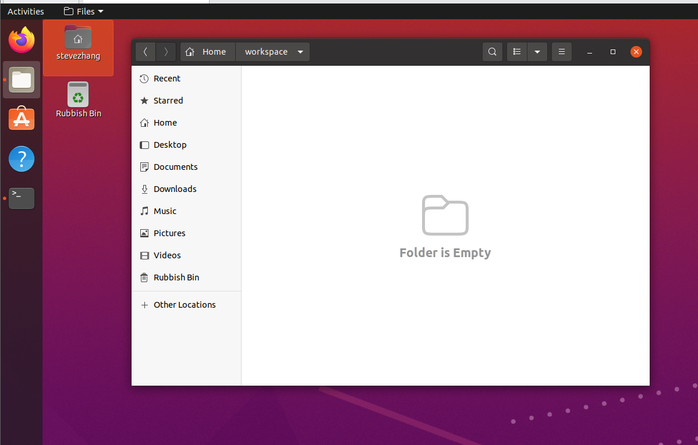
同时打开course-materials中的项目压缩文件位置：course-materials/00_project_archives/uav_motion_planning.zip。鼠标选中该压缩包文件，直接拖动到虚拟机中的workspace中。
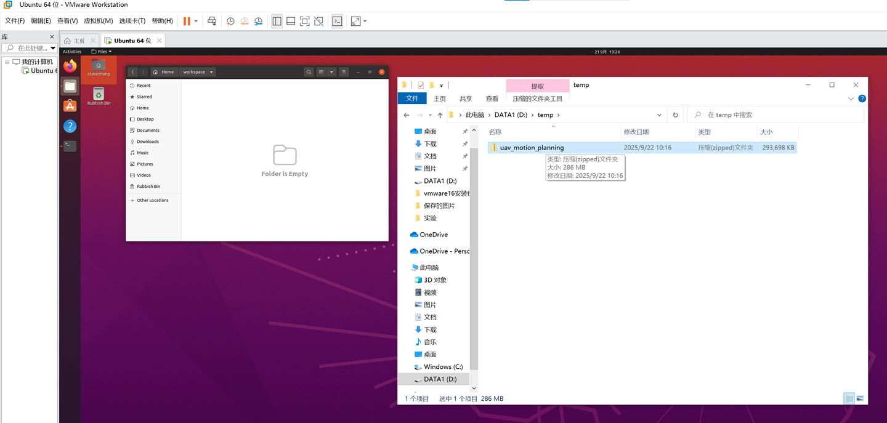
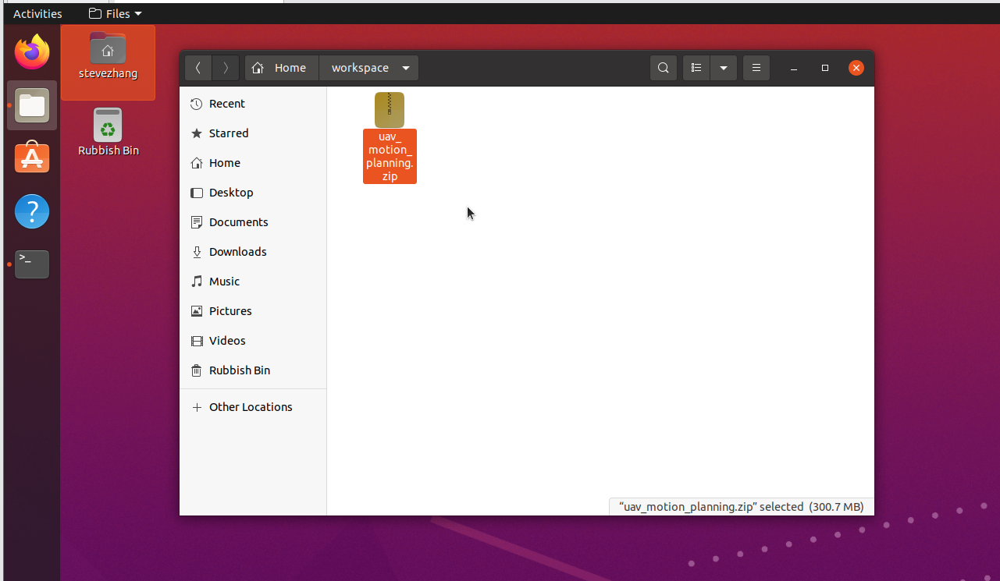
再右键选中extract here,即可将文件解压到该目录中。
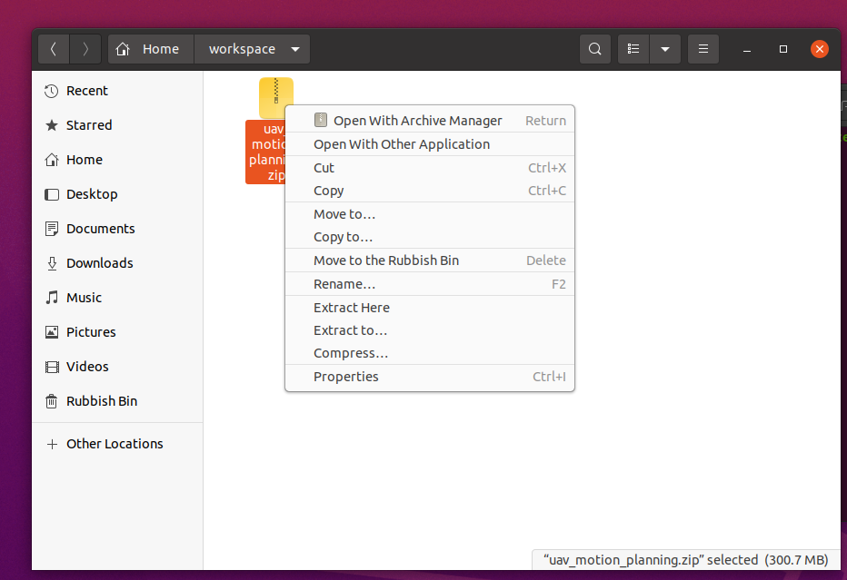
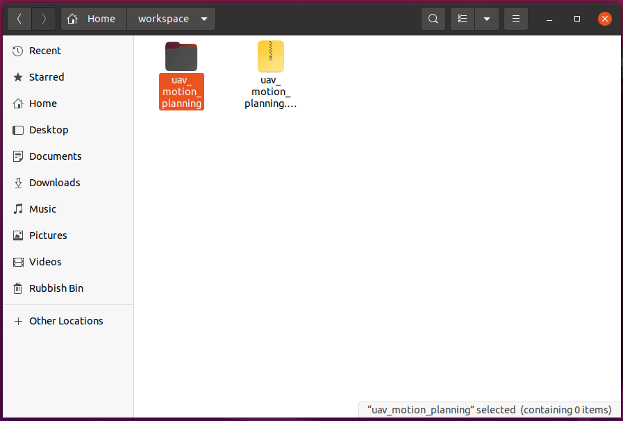
接下来我们点击解压好的工程文件的图标，进入界面后鼠标右键点击空白处，选择open in terminal，即可打开一个已经进入了当前文件目录的终端。

如图所示，终端中蓝色文字的部分则代表终端当前所在的文件目录的位置，可以看到在linux中，我们不仅可以用上述的图形化操作的方法访问该文件夹，也可以用命令行终端的方式访问。
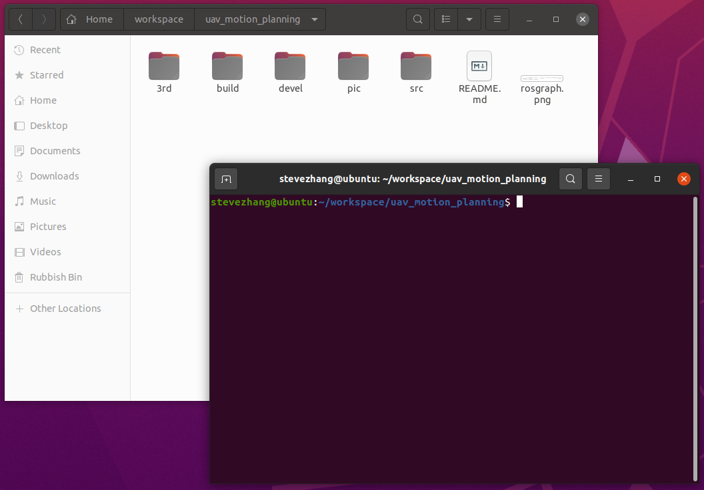
如下图所示，我们在终端中输入pwd命令可以查看该终端当前所处的文件目录的路径，也就是该终端正在访问哪个文件夹。再输入ls命令可以看到当前文件夹目录下有哪些文件，这就是在linux系统中以图形化和命令行访问文件的两种方式，可以看到后方图形化界面和终端中显示的文件数量和名称是一致的，因为两者都是在访问同一文件夹。
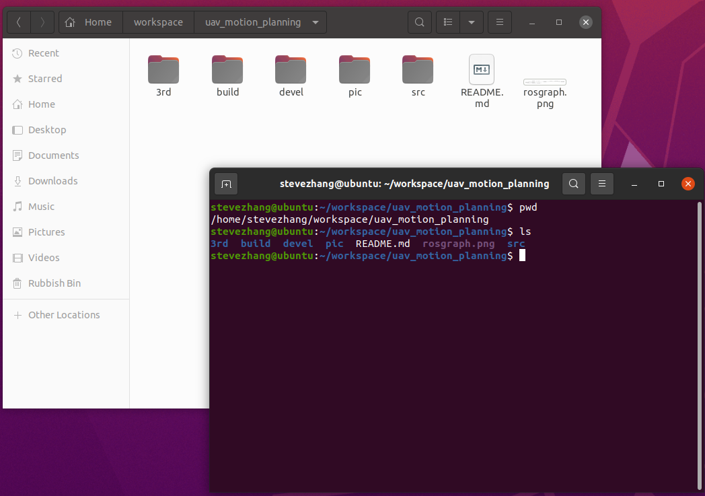
实验二：配置工程运行环境和编译代码
进入目录后，首先安装运行程序所必要的依赖，在终端中输入如下命令（可能会要求输入用户密码以获取权限）：
sudo apt install libeigen3-dev
再输入：sudo apt-get install ros-noetic-octomap-ros

接下来我们将要对该工程项目的相关依赖进行编译，在当前终端的目录下输入如下命令：
cd 3rd/osqp/buildcd命令为linux下常用的用于进入下一级目录所使用的命令，在此处输入的命令意思为进入/workspace/uav_motion_planning目录下的3rd/osqp/build目录。

同样地我们也可以用图形化界面点击进入该文件目录，这一步只是想让大家理解linux下文件目录访问的逻辑
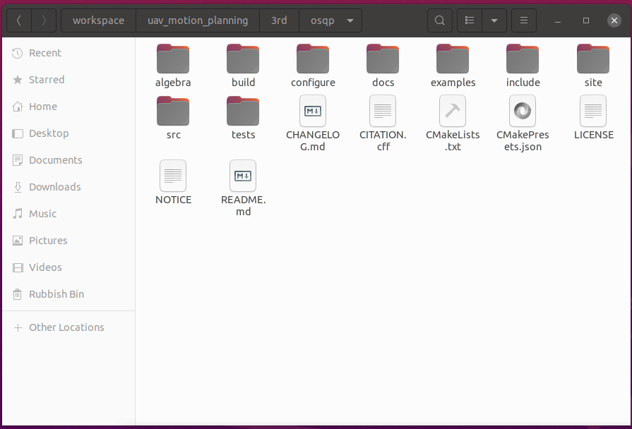
接下来输入以下命令（如虚拟机缺少系统依赖或软件源不可用，可能需要先检查网络或离线源配置）:
cmake ..
cmake是一个常用的跨平台编程语言编译工具。

接下来再输入make命令，编译到100%即为成功。

接下来再输入以下命令：
sudo make install
现在完成了osqp模块部分的编译，接下来还剩osqp-eigen模块的编译。
输入以下命令：
cd ..即可退回至上一层目录，这里我们在之前的终端连续输入三次直到退回该工程的主目录。
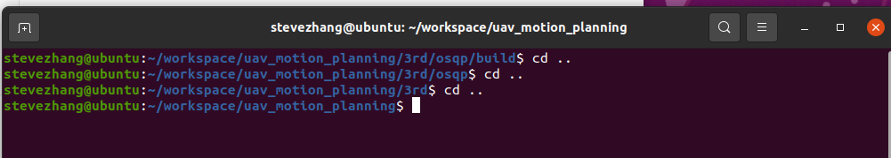
这里我们输入以下命令：
cd 3rd/osqp-eigen/build进入另一个所需编译的模块的目录。

同样地流程输入cmake ..命令。

再输入make命令进行进一步编译。

再输入sudo make install命令完成该模块最后一步。

然后我们再次回到该工程文件的主目录。

进行最后一步编译，输入：
catkin_make -DCMAKE_CXX_STANDARD=14
等待编译结束，至此完成所有准备工作，接下来可以运行程序了。

实验三：运行经典路径规划程序
在当前终端空白处点击鼠标右键，选择new window，能快速新建一个处于该目录的终端，

两个终端中都输入如下命令：
source devel/setup.bash该命令用于在每次运行ros程序前导入相关环境变量，可以让ros找到你所想运行的程序。

1. A_star算法
第一个终端输入如下命令：
roslaunch plan_manage single_run_in_sim.launch第二个终端输入：
roslaunch test test_astar_searching.launch即可在模拟的仿真rviz界面中看到地图环境，
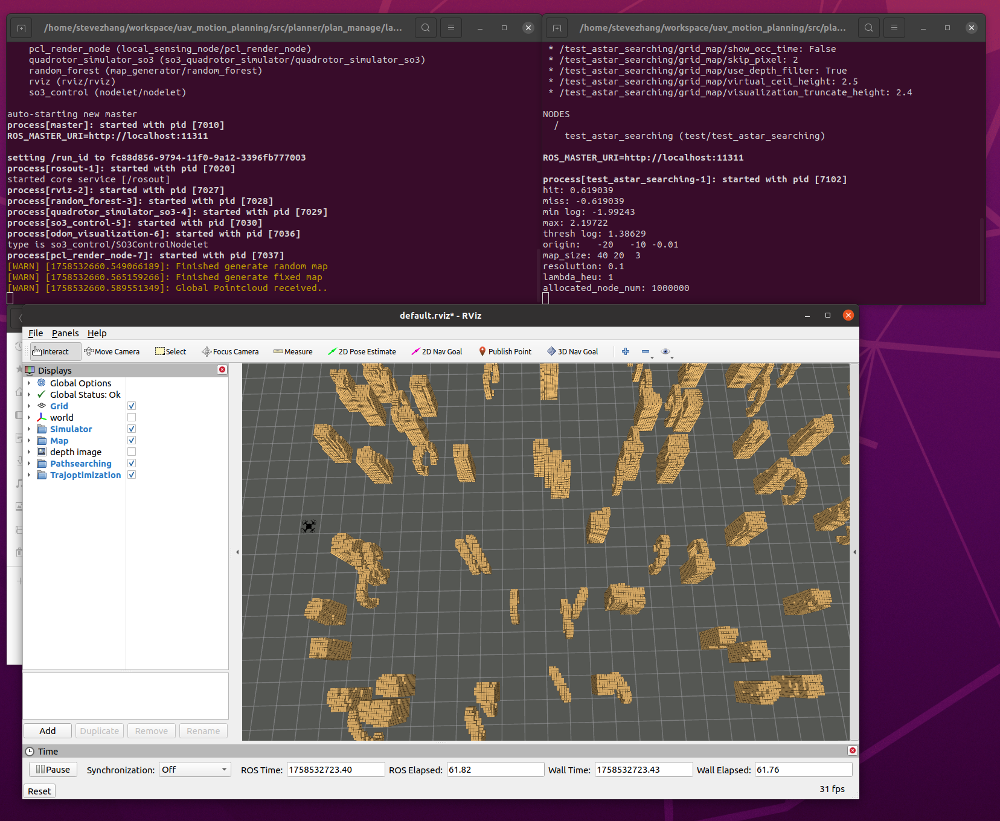
使用鼠标滚轮或者电脑触控板即可放缩视角看到环境的全貌，此时点击上方菜单栏中的3D Nav Goal选项，点击地图内任意一点给无人机发布一个终点信息，即可以查看到A_star路径规划算法计算出的无人机到达终点的红色路径。
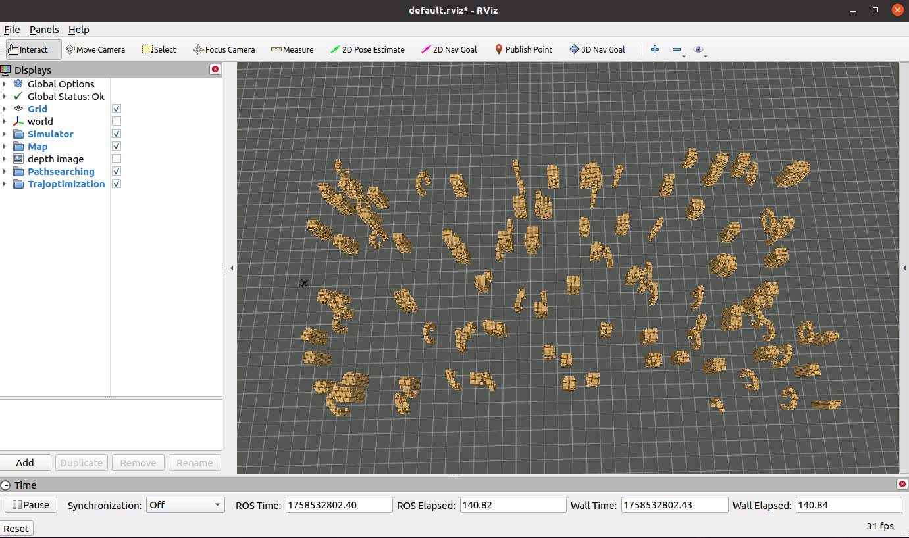
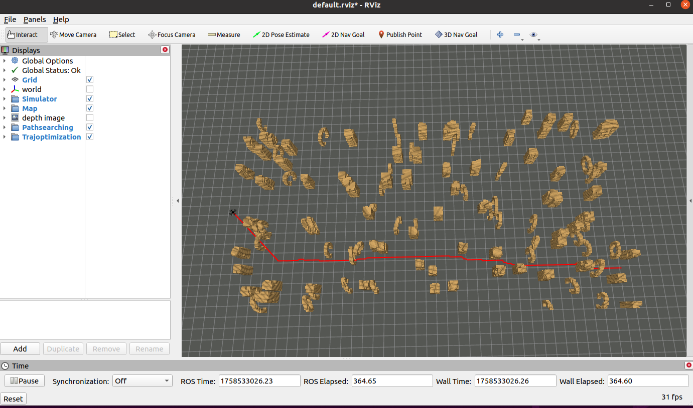
2. RRT算法
对上面正在运行的两个终端，分别鼠标点击终端，使用ctrl加上c的命令打断正在运行的程序，再执行如下步骤：
第一个终端输入如下命令：
roslaunch plan_manage single_run_in_sim.launch第二个终端输入：
roslaunch test test_rrt_searching.launch即可在模拟的仿真rviz界面中看到地图环境，
以同样的方法发布终点，可以看到rrt算法进行路径规划的效果。
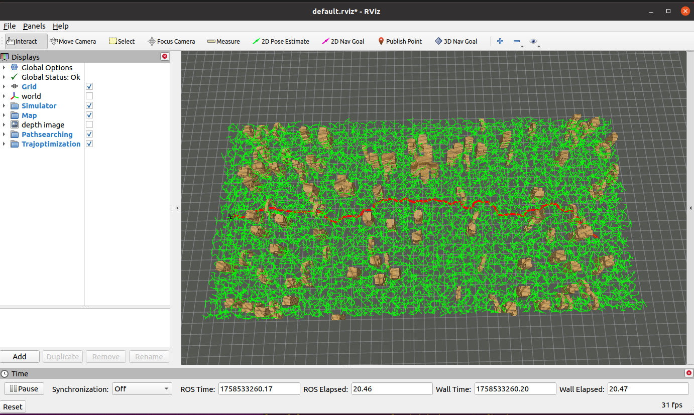
3. RRT_star算法
同样的流程，对上面正在运行的两个终端，分别鼠标点击终端，使用ctrl加上c的命令打断正在运行的程序，再执行如下步骤：
第一个终端输入如下命令：
roslaunch plan_manage single_run_in_sim.launch第二个终端输入：
roslaunch test test_rrt_star_searching.launch即可在模拟的仿真rviz界面中看到地图环境，
以同样的方法发布终点，可以看到rrt_star算法进行路径规划的效果,观察对比一下rrt算法与其改进后的rrt_star算法的不同，改进后的算法的优势在哪里？
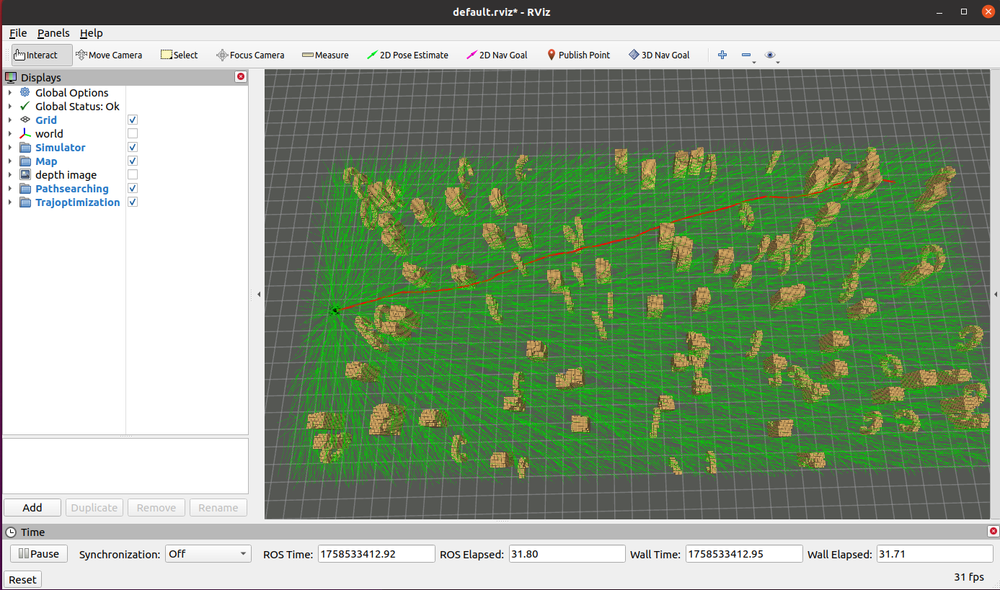